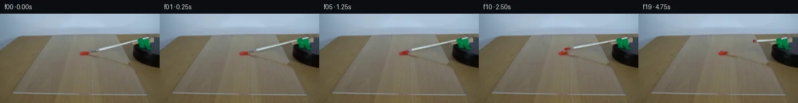

![首帧]()

Round 00
2026-11-05T14:23:28.962396+00:00像素候选变化代码 +189/−0inspection 更新
pixels 6794c8f1a2be0e98 · code 1ea5539497a61988
查看本轮 generate.py 真实 diff
--- previous/generate.py
+++ current/generate.py
@@ -0,0 +1,189 @@
+"""Photographic pixel continuation. No model, renderer, reference, or image viewer."""
+from pathlib import Path
+import json
+import math
+import numpy as np
+import cv2
+from PIL import Image, ImageDraw
+from scipy.ndimage import map_coordinates, gaussian_filter, binary_dilation
+from artifact_io import save
+
+ROOT = Path(__file__).resolve().parent
+W, H = 256, 144
+SOURCE = np.asarray(Image.open(ROOT / 'first_frame.png').convert('RGB'))
+Y, X = np.mgrid[:H, :W].astype(float)
+P = np.array([224.0, 41.4])
+A = np.array([-78.5, 19.6])
+B = np.array([-47.0, 3.8])
+L = np.linalg.norm(A)
+N0 = np.array([-A[1], A[0]]) / L
+ss = ((X-P[0])*A[0] + (Y-P[1])*A[1]) / (L*L)
+qq = (X-P[0])*N0[0] + (Y-P[1])*N0[1]
+# Native photographed metal, including the original anti-aliased edge and bristles.
+halfwidth = np.where(ss > .805, 2.05, 2.0)
+alpha0 = np.clip(halfwidth + .55 - np.abs(qq), 0, 1)
+alpha0 *= np.clip((ss-.025)*L + .4, 0, 1)
+alpha0 *= np.clip((1.016-ss)*L, 0, 1)
+alpha0 *= np.clip((222.3-X), 0, 1)
+alpha0 *= np.clip((X-144.5), 0, 1)
+source_mask = alpha0 > .02
+# Restrict local photographic reconstruction to a narrow original brush footprint.
+repair_mask = binary_dilation(source_mask, iterations=1)
+repair_mask &= (X < 222) & (X > 143) & (Y > 39) & (Y < 65)
+base = cv2.inpaint(SOURCE, repair_mask.astype(np.uint8)*255, 3, cv2.INPAINT_TELEA).astype(float)
+# Only the immediate low-contrast shadow next to the original silver shaft is removed.
+# More distant photographed table/acrylic texture is retained.
+redmask = (SOURCE[:,:,0] > 1.25*SOURCE[:,:,1]) & (SOURCE[:,:,0] > 1.4*SOURCE[:,:,2])
+redmask &= (X >= 126) & (X <= 145) & (Y >= 59) & (Y <= 69)
+redmask = gaussian_filter(redmask.astype(float), .45)
+mount = ((SOURCE[:,:,1] > 1.7*SOURCE[:,:,0]) & (SOURCE[:,:,1] > 1.25*SOURCE[:,:,2]) & (SOURCE[:,:,1] > 40) & (X>219))
+mount_alpha = gaussian_filter(mount.astype(float), .35)
+
+
+def angle(t):
+ return 1.65*t/19
+
+
+def flex(theta):
+ # Small compliant bending of wet bristles, released continuously on departure.
+ if theta <= .07 or theta >= .68:
+ return 0.0
+ u=(theta-.07)/.61
+ return 2.0*math.sin(math.pi*u)**1.2
+
+
+def vector(theta):
+ return A*math.cos(theta)+B*math.sin(theta)
+
+
+def tip(theta):
+ out=P+vector(theta)
+ out[1]+=flex(theta)
+ return out
+
+
+def add_paint(out, theta):
+ # Material transfer accumulates at fixed world points. Every later frame retains it.
+ cover=np.zeros((H,W),float)
+ ridge=np.zeros_like(cover)
+ maximum=min(theta,.695)
+ if maximum < .12:
+ return out
+ for a in np.arange(.12,maximum+.0001,.014):
+ pt=tip(float(a))
+ # Wet bristle pressure tapers as it exits. Last trace terminates close to the dollop.
+ pressure=max(.12,1.0-(a-.35)/.42)
+ width=.85+.75*pressure
+ dx=X-pt[0]; dy=Y-pt[1]-.35
+ # Foreshortened, textured wet stroke with a soft, nonuniform edge.
+ rr=(dx/(width*1.0))**2+(dy/(width*.65))**2
+ aa=np.clip((1.45-rr)*1.9,0,1)
+ aa*=.72+.1*np.sin(X*2.37+Y*.87)
+ cover=np.maximum(cover,aa)
+ ridge=np.maximum(ridge,np.exp(-((dx/width)**2+((dy+.35)/.25)**2))*aa)
+ # Keep the original lower body of the dollop and its photographic highlights.
+ cover*=1-.53*redmask
+ texture=.92+.045*np.sin(X*3.1+Y*.6)+.028*np.cos(X*.8-Y*2.2)
+ color=np.stack([156*texture+ridge*27, 39*texture+ridge*21, 27*texture+ridge*17],axis=-1)
… diff truncated; 102 more lines …